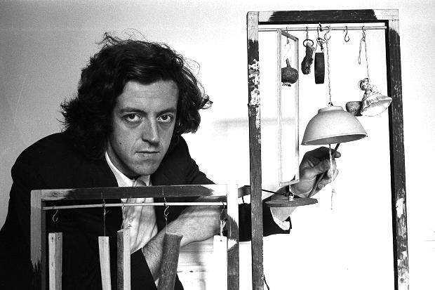

Tuesday, March the 14th, 2017
back to: title, date or indexes
Yesterday I told you lot it is International Brain Awareness Week. I neglected to mention that it is also International Brian Awareness Week. This is the time of year when we make sure we are aware that the full name of Cornelius Cardew, the firebrand Marxist-Leninist composer and author of Stockhausen Serves Imperialism, who once threw Yoko Ono out of his house, was Brian Cornelius Cardew. Why did he drop the Brian? It seems a far more “proletarian” name than Cornelius, so one would have thought he would embrace it. As Wilcox—a non-Brian—noted, “it'th a mythtery”.
